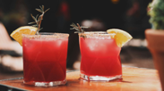
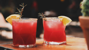

About Us
Bundaberg Brewed Drinks, established in 1968 by the Fleming family in Bundaberg, Queensland, is dedicated to producing high-quality, naturally brewed beverages that celebrate authentic Australian flavors. Known for its iconic ginger beer, the company combines time-honored brewing methods with carefully sourced ingredients, resulting in rich, distinctive tastes. Each drink is crafted in small batches to ensure the highest quality and freshness, reflecting the vibrant essence of its tropical surroundings. With a commitment to craftsmanship and a passion for innovation, Bundaberg Brewed Drinks continues to delight customers both locally and globally with its range of refreshing, flavorful beverages.

 
